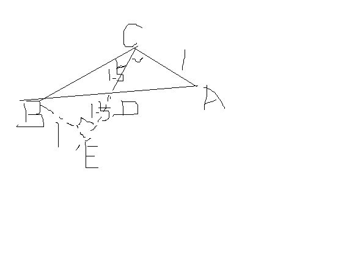
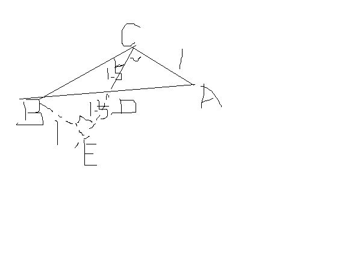

初三数学急
2009-03-07
如图，在三角形ABC中，D为AB的中点，DC垂直于AC，tan角DCB=1\3,求角A的三角函数值

如图，延长CD，做BE⊥CD，交于E点。 tan∠DCB=BE/CE ∴CE=3BE 证△BED≌△ACD 得AC=BE=1/3CE=2/3CD ∴tan∠A=3：2

2009-03-07
如图，在三角形ABC中，D为AB的中点，DC垂直于AC，tan角DCB=1\3,求角A的三角函数值
如图，延长CD，做BE⊥CD，交于E点。 tan∠DCB=BE/CE ∴CE=3BE 证△BED≌△ACD 得AC=BE=1/3CE=2/3CD ∴tan∠A=3：2
